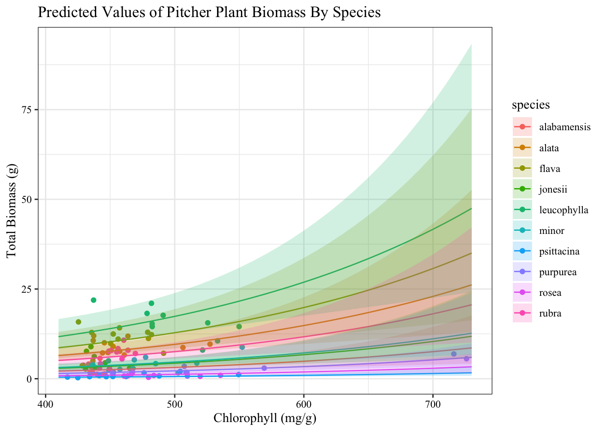

Code
library(tidyverse)
library(here)
library(janitor)
library(ggeffects)
library(performance)
library(naniar)
library(flextable)
library(car)
library(broom)
library(ggplot2)
library(corrplot)
library(AICcmodavg)
library(GGally)
library(MuMIn)Bianca Berron
06-05-2023
Github: https://github.com/bianca-berron
Sarracenia are carnivorous pitcher plants that use their pitcher-shaped leaves to catch arthropod prey for nutrition (Milne and Waller 1). Oftentimes, the majority of their diet is made up of spiders, however Sarracenia also feed on insects, mites, mollucks, and occcasionally, even small verterbrates (Milne 1). This carnivorous pitcher plant has many uses for humans including treatments for type 2 diabetes and tuberculosis-like symptoms (Huang et al. 1). Therefore, understanding what morphological, physiological, or taxonomic characteristics predict biomass may be useful if these pitcher plants began to be used for medical purposes. Moreover, understanding what factors predict pitcher plant biomass can also be helpful to understand how climate change may affect these plants if certain pitcher plant growth biomass factors are depleted. As a result, this statistical analysis revolves around the question of how Sarracenia characteristics predict biomass, as well as which characteristics best predict biomass based on their models. We are testing the null hypothesis that Sarracenia characteristics do not predict biomass against the alternative hypothesis that Sarracenia characteristics do predict biomass.
The data from the dataset was compiled by conducting an experiment in which two plants of each Sarracenia species (10 Sarracenia species in total) were assigned to one of six feeding levels ranging from 0 - 0.25g of finely ground wasps per feeding (for small species), 0 - 0.5g for intermediate sized species, and 0 - 1.0g for large species (Ellison and Farnsworth). The plants were fed once a week for a total of 7 weeks. In addition, aboveground size and photosynthetic rate were measured before treatments started (metadata). To organize these data, the column names were made cleaner using the clean() function and only certain columns were selected (totmass, species, feedlevel, sla, chlorophyll, amass, num_lvs, num_phyll).
library(tidyverse)
library(here)
library(janitor)
library(ggeffects)
library(performance)
library(naniar)
library(flextable)
library(car)
library(broom)
library(ggplot2)
library(corrplot)
library(AICcmodavg)
library(GGally)
library(MuMIn)Read in the data:
plant <- read_csv(here("data", "knb-lter-hfr.109.18 (1)", "hf109-01-sarracenia.csv")) %>%
# make column names cleaner
clean_names() %>%
# selecting columns of interest
select(totmass, species, feedlevel, sla, chlorophyll, amass, num_lvs, num_phylls)Next, a visualization of the missing data were created, which showed there were missing data in the sla, chlorophyll, amass, num_lvs, and num_phylls column. Therefore, the missing data were dropped from the dataset and a new subset of data was created without the missing data.
Visualize the missing data:
gg_miss_var(plant)
Figure 1: Missing Data. Number of missing data entries on the x-axis and variables on the y-axis. Lines correspond to number of missing data values for each variable.
Subsetting data by dropping NAs:
plant_subset <- plant %>%
drop_na(sla, chlorophyll, amass, num_lvs, num_phylls)To determine the Pearson’s correlation between variables, we calculated Pearson’s r and visually represented correlation using a correlation plot. Pearson’s r was calculated by computing the covariances, or correlations, between two variables (such as species versus biomass or chlorophyll versus number of pitcher plants) which was done by taking the covariance of the two variables and dividing them by the product of their standard deviations. This was done for every pair of variables, so that each variable was compared to itself as well as each variable measured.
# calculate Pearson's r for numerical values only
plant_cor <- plant_subset %>%
select(feedlevel:num_phylls) %>%
cor(method = "pearson")
corrplot(plant_cor,
# change the shape of what's in the cells
method = "ellipse",
# add correlation coefficients into plot
addCoef.col = "black"
) 
Figure 2. Pearson’s Correlation Plot. Black text within figure represents correlation coefficient. Color represents direction with red being -1 and blue being +1. The more-defined the ellipse, the greater the correlation; diagonals show correlation between variables and themselves = 1.
Moreover, to determine the relationships between variables, a pairs plot was created, comparing each variable to itself and every variable measured. The results were formatted into several visualizations that showed the relationships between them.
plant_subset %>%
# select all columns between species and num_phylls
select(species:num_phylls) %>%
# create pairs plot
ggpairs()
Figure 3. Pairs Plot. Variables of interest are listed on both x and y axes. Boxes along diagonals display density plot for each variable while boxes in lower left show scatterplot between each pair of variables. Numerical values in boxes display the Pearson Correlation coefficient between each variable.
In addition, to determine how species and physiological characteristics predict biomass, we fit multiple linear models. The null model did not include any predictors in the model, while the full model included all predictors in the model (species, feedlevel, sla, chlorophyll, amass, num_lvs, num_phylls).
# null = no predictors in model
null <- lm(totmass ~ 1, data = plant_subset)
# full = all potential predictors in model
full <- lm(totmass ~ species + feedlevel + sla + chlorophyll + amass + num_lvs + num_phylls, data = plant_subset)We visually assessed the normality and homoskedasticity of residuals using diagnostic plots for the full model.
# plot in 2x2 table
par(mfrow = c(2, 2))
plot(full)
We also tested for normality using the Shapiro-Wilk test and tested for for homoskedasticity using the Breusch-Pagan test.
check_normality(full)Warning: Non-normality of residuals detected (p < .001).check_heteroscedasticity(full)Warning: Heteroscedasticity (non-constant error variance) detected (p < .001).For the original data, this resulted in non-normality and heteroscedasticity in the residuals, therefore, the data was transformed into its natural log form to create normality and homoscedasticity in the residuals (only the response variable was transformed, not the predictors). The same tests were run for normality and homoscedasticity using the transformed data and the assumptions for the full model were met.
# log function = natural log
# transforming data into natural log form to create normality and homoscedasticity
null_log <- lm(log(totmass) ~ 1, data = plant_subset)
full_log <- lm(log(totmass) ~ species + feedlevel + sla + chlorophyll + amass + num_lvs + num_phylls, data = plant_subset)
# plot in 2x2 table
par(mfrow = c(2, 2))
plot(full_log)
check_normality(full_log)OK: residuals appear as normally distributed (p = 0.107).check_heteroscedasticity(full_log)OK: Error variance appears to be homoscedastic (p = 0.071).# assumptions of linear regression are met using log transformationFull Model Diagnostics. Top left model is a plot of residuals versus fitted values, top right is a normal Q-Q plot, bottom left is a plot of the square root of standardized residuals versus fitted values, and bottom left is a plot of standardized residuals versus leverage.
In addition to the full and null models, three additional models were created to determine how species and certain physiological characteristics predict biomass. The first additional model created explored how species predicted total biomass because oftentimes, varying species will have different characteristics resulting in differing biomasses. The assumptions (normality and homoscedasticity) were met.
model 2:
model2_log <- lm(log(totmass) ~ species, data = plant_subset)check assumptions for model 2:
par(mfrow = c(2, 2))
plot(model2_log)
check_normality(model2_log)OK: residuals appear as normally distributed (p = 0.374).# residuals are normally distributed
check_heteroscedasticity(model2_log)OK: Error variance appears to be homoscedastic (p = 0.100).# variances appear homoscedasticSpecies Model Diagnostics.Top left model is a plot of residuals versus fitted values, top right is a normal Q-Q plot, bottom left is a plot of the square root of standardized residuals versus fitted values, and bottom left is a plot of standardized residuals versus leverage.
The second additional model created explored how chlorophyll affects total biomass. Although the normality assumption was not met, I still chose to use this model as chlorophyll allows plants to undergo photosynthesis, which allows plants to create sugar, promoting plant growth. Therefore, chlorophyll could directly affect a pitcher plant’s total biomass.
model 3:
model3_log <- lm(log(totmass) ~ chlorophyll, data = plant_subset)check assumptions for model 3:
par(mfrow = c(2, 2))
plot(model3_log)
check_normality(model3_log)Warning: Non-normality of residuals detected (p = 0.002).# non normality of residuals detected
check_heteroscedasticity(model3_log)OK: Error variance appears to be homoscedastic (p = 0.546).# error variance appears homoscedasticChlorophyll Model Diagnostics. Top left model is a plot of residuals versus fitted values, top right is a normal Q-Q plot, bottom left is a plot of the square root of standardized residuals versus fitted values, and bottom left is a plot of standardized residuals versus leverage.
The third model created explored how feedlevel affects total biomass. Once again, although the normality assumption was not met, I still used this model because if a plant has access to more food, then the plant would likely have a larger biomass.
model 4:
model4_log <- lm(log(totmass) ~ feedlevel, data = plant_subset)check assumptions for model 4:
par(mfrow = c(2, 2))
plot(model4_log)
check_normality(model4_log)Warning: Non-normality of residuals detected (p = 0.018).# non normality of residuals detected
check_heteroscedasticity(model4_log)OK: Error variance appears to be homoscedastic (p = 0.261).# variance appears homoscedasticFeedlevel Model Diagnostics. Top left model is a plot of residuals versus fitted values, top right is a normal Q-Q plot, bottom left is a plot of the square root of standardized residuals versus fitted values, and bottom left is a plot of standardized residuals versus leverage.
A model comparison between all of these models was created using Akaike’s Information Criterion (AIC) values. We looked for the simplest model that explains the most variance, which is essentially a compromise between the complexity of a model and how well a model predicts the response. We compared models using AIC and chose the model with the lowest value, which was full_log.
# determine AIC values for each model
AICc(full_log)[1] 133.9424AICc(model2_log)[1] 157.5751AICc(null_log)[1] 306.0028AICc(model3_log)[1] 307.368AICc(model4_log)[1] 294.978# place AIC values in a table to determine model with lowest AIC
MuMIn::model.sel(full_log, model2_log, null_log, model3_log, model4_log)Model selection table
(Int) ams chl fdl num_lvs num_phy sla spc df
full_log -1.3390 0.002338 0.004368 -0.4743 0.09176 -0.03959 -0.002493 + 17
model2_log 0.8836 + 11
model4_log 1.0550 1.6410 3
null_log 1.3500 2
model3_log 0.4650 0.001877 3
logLik AICc delta weight
full_log -46.371 133.9 0.00 1
model2_log -66.337 157.6 23.63 0
model4_log -144.368 295.0 161.04 0
null_log -150.941 306.0 172.06 0
model3_log -150.563 307.4 173.43 0
Models ranked by AICc(x) # full_log has lowest AIC -> best predictor modelNext, a variance inflation factor check looking for multicollinearity was run for the full model to determine if there were any variances inflating the \(R^2\) values. We evaluated multicollinearity by calculating generalized variance inflation factors and determined that there is no multicollinearity because the GVIF values were are less than 5, meaning none of the predictors were inflating the \(R^2\) value.
car::vif(full_log) GVIF Df GVIF^(1/(2*Df))
species 42.351675 9 1.231351
feedlevel 1.621993 1 1.273575
sla 1.999989 1 1.414210
chlorophyll 1.949828 1 1.396362
amass 2.872084 1 1.694722
num_lvs 2.813855 1 1.677455
num_phylls 2.995510 1 1.730754Based on the tests run, we found that the full model including species, feedlevel, sla, chlorophyll, amass, num_lvs, and num_phylls predictors best predicted total biomass of pitcher plants (\(F_{15, 87}\) = 38.38, \(R^2\) = 0.85, p < 0.001, n = 103, α = 0.05). This model was chosen as it had the lowest AIC value, which means the full model was the simplest model that explained the most variance, and both the normality and homoscedasticity assumptions were met.
summary(full_log)
Call:
lm(formula = log(totmass) ~ species + feedlevel + sla + chlorophyll +
amass + num_lvs + num_phylls, data = plant_subset)
Residuals:
Min 1Q Median 3Q Max
-0.88872 -0.20811 0.02825 0.24218 0.78287
Coefficients:
Estimate Std. Error t value Pr(>|t|)
(Intercept) -1.339043 0.597727 -2.240 0.027624 *
speciesalata 1.113163 0.184021 6.049 3.56e-08 ***
speciesflava 1.404562 0.262955 5.341 7.29e-07 ***
speciesjonesii 0.319652 0.196426 1.627 0.107281
speciesleucophylla 1.709035 0.227608 7.509 4.88e-11 ***
speciesminor 0.389310 0.187903 2.072 0.041239 *
speciespsittacina -1.645198 0.207035 -7.946 6.36e-12 ***
speciespurpurea -0.364348 0.254380 -1.432 0.155643
speciesrosea -0.947383 0.260495 -3.637 0.000467 ***
speciesrubra 0.875342 0.196361 4.458 2.46e-05 ***
feedlevel -0.474255 0.234493 -2.022 0.046199 *
sla -0.002493 0.001160 -2.149 0.034430 *
chlorophyll 0.004368 0.001189 3.672 0.000414 ***
amass 0.002338 0.002988 0.782 0.436166
num_lvs 0.091764 0.022413 4.094 9.46e-05 ***
num_phylls -0.039585 0.051714 -0.765 0.446068
---
Signif. codes: 0 '***' 0.001 '**' 0.01 '*' 0.05 '.' 0.1 ' ' 1
Residual standard error: 0.413 on 87 degrees of freedom
Multiple R-squared: 0.8687, Adjusted R-squared: 0.8461
F-statistic: 38.38 on 15 and 87 DF, p-value: < 2.2e-16table <- tidy(full_log, conf.int = TRUE) %>%
mutate(p.value = round(p.value, 3)) %>%
# make p.value a character to adjust column to show rounded values and p-values less than 0.001
mutate(p.value = case_when(
p.value < 0.001 ~ "< 0.001", TRUE ~ as.character(p.value)
)) %>%
# change the estimates, stan error, confidence intervals and t-statistics to round to 3 digits
# using mutate
mutate(across(c("estimate", "std.error", "statistic", "conf.low", "conf.high"), round, 3)) %>%
# make it into a flextable
flextable() %>%
# edit labels
set_header_labels(term = "Term",
estimate = "Estimate",
std.error = "Standard Error",
statistic = "Statistic",
p.value = "P-value",
conf.low = "Confidence Interval (Low)",
conf.high = "Confidence Interval (High)") %>%
# fit to the viewer
autofit()
tableTerm | Estimate | Standard Error | Statistic | P-value | Confidence Interval (Low) | Confidence Interval (High) |
|---|---|---|---|---|---|---|
(Intercept) | -1.339 | 0.598 | -2.240 | 0.028 | -2.527 | -0.151 |
speciesalata | 1.113 | 0.184 | 6.049 | < 0.001 | 0.747 | 1.479 |
speciesflava | 1.405 | 0.263 | 5.341 | < 0.001 | 0.882 | 1.927 |
speciesjonesii | 0.320 | 0.196 | 1.627 | 0.107 | -0.071 | 0.710 |
speciesleucophylla | 1.709 | 0.228 | 7.509 | < 0.001 | 1.257 | 2.161 |
speciesminor | 0.389 | 0.188 | 2.072 | 0.041 | 0.016 | 0.763 |
speciespsittacina | -1.645 | 0.207 | -7.946 | < 0.001 | -2.057 | -1.234 |
speciespurpurea | -0.364 | 0.254 | -1.432 | 0.156 | -0.870 | 0.141 |
speciesrosea | -0.947 | 0.260 | -3.637 | < 0.001 | -1.465 | -0.430 |
speciesrubra | 0.875 | 0.196 | 4.458 | < 0.001 | 0.485 | 1.266 |
feedlevel | -0.474 | 0.234 | -2.022 | 0.046 | -0.940 | -0.008 |
sla | -0.002 | 0.001 | -2.149 | 0.034 | -0.005 | 0.000 |
chlorophyll | 0.004 | 0.001 | 3.672 | < 0.001 | 0.002 | 0.007 |
amass | 0.002 | 0.003 | 0.782 | 0.436 | -0.004 | 0.008 |
num_lvs | 0.092 | 0.022 | 4.094 | < 0.001 | 0.047 | 0.136 |
num_phylls | -0.040 | 0.052 | -0.765 | 0.446 | -0.142 | 0.063 |
Essentially, the full model takes all the predictors and fits them into a model to determine the predicted biomass of the pitcher plants. Below is a visualization of how one of those predictors (chlorophyll) may predict the biomass of pitcher plants.
# create new object to show predicted biomass of pitcher plants based on chlorophyll by species
chlorophyll_predictions <- ggpredict(full_log, terms = c("chlorophyll", "species"), back.transform = TRUE) %>%
rename("species" = "group")
ggplot(data = plant_subset, aes(x = chlorophyll, y = totmass)) +
# create scatterplot with different colored points for each species
geom_jitter(aes(color = species)) +
# add a line showing predicted biomass based on chlorophyll content for each species
geom_line(data = chlorophyll_predictions, aes(x = x, y = predicted, color = species)) +
# insert confidence interval for each species based on chlorophyll_predictions
geom_ribbon (data = chlorophyll_predictions, aes(x = x, y = predicted, fill = species, ymin = conf.low, ymax = conf.high), alpha = 0.2) +
# change axis titles to be meaningful
labs (x = "Chlorophyll (mg/g)", y = "Total Biomass (g)", title = "Predicted Values of Pitcher Plant Biomass By Species") +
theme_bw() +
theme(
# edit font and font color of the plot
axis.title = element_text(family = "Times New Roman", color = "black"),
plot.title = element_text(family = "Times New Roman", color = "black"),
axis.text = element_text(family = "Times New Roman", color = "black"),
legend.text = element_text(family = "Times New Roman", color = "black"),
legend.title = element_text(family = "Times New Roman", color = "black")
)
Figure 4. Model Prediction for Biomass as a Function of Chlorophyll by Species. Solid lines represent predicted biomass of pitcher plants based on chlorophyll level for each species. Highlighted areas represents 95% confidence interval for predicted biomass for each speices. Jittered points are original data.
It is important to note that these results are reported on the scale of the original variable, not the log transformation. With that said, this model says that all else constant, an increase in chlorophyll level corresponds to an increase in total biomass for certain species (leucophylla, flava, alata, rubra, minor, and jonesii) as seen in the upward sloping lines in the figure, but does not appear to affect total biomass in other species (alabamensis, purpurea, rosea, pssitacina) as seen by the flatter lines in the figure. For the leucophylla species, one could say that with a chlorophyll level of 410 mg/g, the predicted biomass would be 11.73 g, predicted within a 95% confidence interval of 8.27 g - 16.65 g. In the code below, you can see the predicted total biomass based on chlorophyll level for all species.
chlorophyll_predictions2 <- ggpredict(full_log, terms = c("chlorophyll", "species"), back.transform = TRUE)
chlorophyll_predictions2# Predicted values of totmass
# species = alabamensis
chlorophyll | Predicted | 95% CI
---------------------------------------
410 | 2.12 | [1.60, 2.82]
490 | 3.01 | [2.26, 4.01]
570 | 4.27 | [2.88, 6.33]
730 | 8.59 | [4.20, 17.60]
# species = alata
chlorophyll | Predicted | 95% CI
----------------------------------------
410 | 6.47 | [ 4.95, 8.45]
490 | 9.17 | [ 7.06, 11.92]
570 | 13.01 | [ 8.98, 18.84]
730 | 26.16 | [13.00, 52.65]
# species = flava
chlorophyll | Predicted | 95% CI
----------------------------------------
410 | 8.65 | [ 5.73, 13.07]
490 | 12.27 | [ 8.16, 18.46]
570 | 17.41 | [10.72, 28.27]
730 | 35.01 | [16.28, 75.32]
# species = jonesii
chlorophyll | Predicted | 95% CI
---------------------------------------
410 | 2.92 | [2.10, 4.07]
490 | 4.15 | [2.98, 5.76]
570 | 5.88 | [3.86, 8.97]
730 | 11.83 | [5.70, 24.55]
# species = leucophylla
chlorophyll | Predicted | 95% CI
----------------------------------------
410 | 11.73 | [ 8.27, 16.65]
490 | 16.64 | [12.15, 22.79]
570 | 23.60 | [16.08, 34.63]
730 | 47.47 | [24.14, 93.37]
# species = minor
chlorophyll | Predicted | 95% CI
---------------------------------------
410 | 3.13 | [2.29, 4.29]
490 | 4.45 | [3.42, 5.78]
570 | 6.31 | [4.52, 8.79]
730 | 12.69 | [6.70, 24.03]
# species = psittacina
chlorophyll | Predicted | 95% CI
--------------------------------------
410 | 0.41 | [0.28, 0.61]
490 | 0.58 | [0.40, 0.84]
570 | 0.82 | [0.54, 1.26]
730 | 1.66 | [0.82, 3.35]
# species = purpurea
chlorophyll | Predicted | 95% CI
--------------------------------------
410 | 1.48 | [0.89, 2.46]
490 | 2.09 | [1.42, 3.09]
570 | 2.97 | [2.12, 4.15]
730 | 5.97 | [3.61, 9.87]
# species = rosea
chlorophyll | Predicted | 95% CI
--------------------------------------
410 | 0.82 | [0.54, 1.26]
490 | 1.17 | [0.78, 1.75]
570 | 1.66 | [1.04, 2.65]
730 | 3.33 | [1.60, 6.96]
# species = rubra
chlorophyll | Predicted | 95% CI
----------------------------------------
410 | 5.10 | [ 3.80, 6.83]
490 | 7.23 | [ 5.40, 9.67]
570 | 10.25 | [ 6.91, 15.21]
730 | 20.62 | [10.08, 42.18]
Adjusted for:
* feedlevel = 0.18
* sla = 129.27
* amass = 35.26
* num_lvs = 7.08
* num_phylls = 0.58Ellison, Aaron. and Elizabeth Farnsworth. “Effects of Prey Availability on Sarracenia Physiology at Harvard Forest 2005.” Environmental Data Initiative, ver 18, https://doi.org/10.6073/pasta/26b22d09279e62fd729ffc35f9ef0174 (Accessed 2023-06-01).
Huang, Yen-Hua, et al. “Anticancer and Antioxidant Activities of the Root Extract of the Carnivorous Pitcher Plant Sarracenia Purpurea.” Plants, vol. 11, no. 13, 2022, p. 1668, https://doi.org/10.3390/plants11131668.
Milne, Marc A. “The Purple Pitcher Plant as a Spider Oviposition Site.” Southeastern Naturalist, vol. 11, no. 4, 2012, pp. 567–574, https://doi.org/10.1656/058.011.0402.
Milne, Marc A., and Deborah A. Waller. “Carnivorous Pitcher Plants Eat a Diet of Certain Spiders, Regardless of What’s on the Menu.” Ecosphere, vol. 9, no. 11, 2018, https://doi.org/10.1002/ecs2.2504.